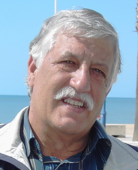

Carlos Martín Izquierdo
Carlos Martín Izquierdo 

 Haz clic aquí para detalles de la Familia de Carlos con Cándida Moles Navas Haz clic aquí para detalles de la Familia de Carlos con Remedios Alonso Granados
Haz clic aquí para detalles de la Familia de Carlos con Cándida Moles Navas Haz clic aquí para detalles de la Familia de Carlos con Remedios Alonso Granados
This page is within a frameset. View the entire genealogy report of Martín Izquierdo families, or surname index of Martín Izquierdo pedigrees or report summary of Martín Izquierdo heritage from "Árbol Genealógico de Manolo y Amalia".
Genealogy Search.
© 2006 GenoPro Inc. All Rights Reserved.